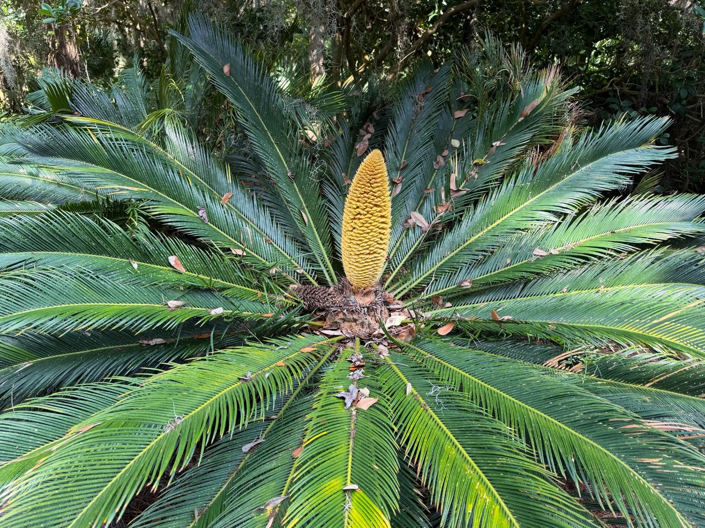
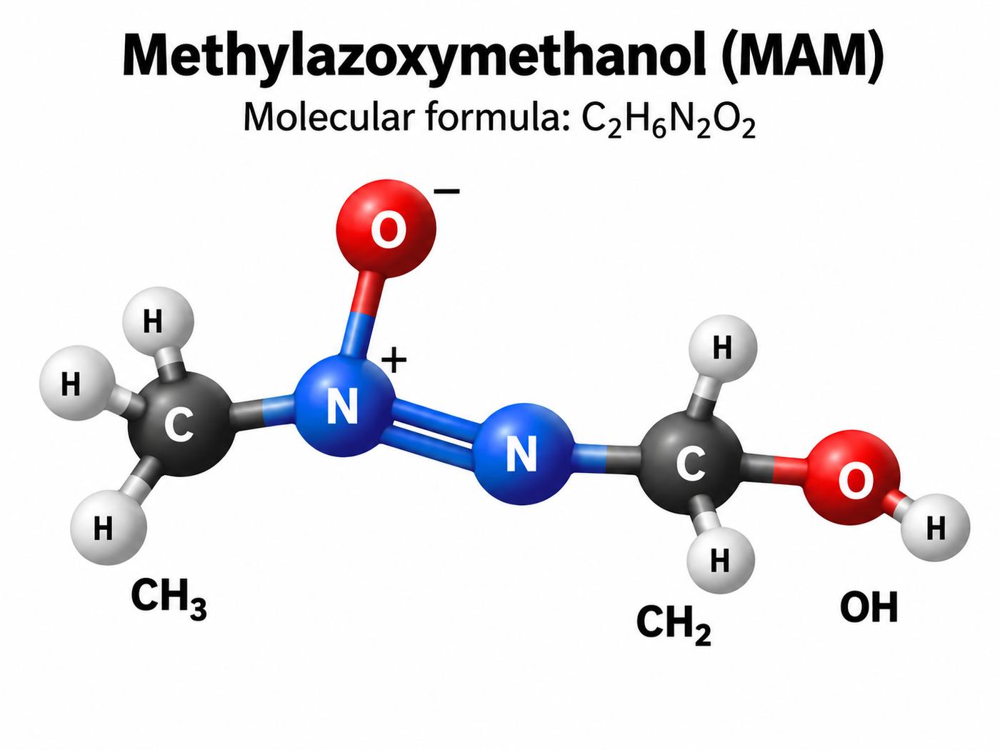
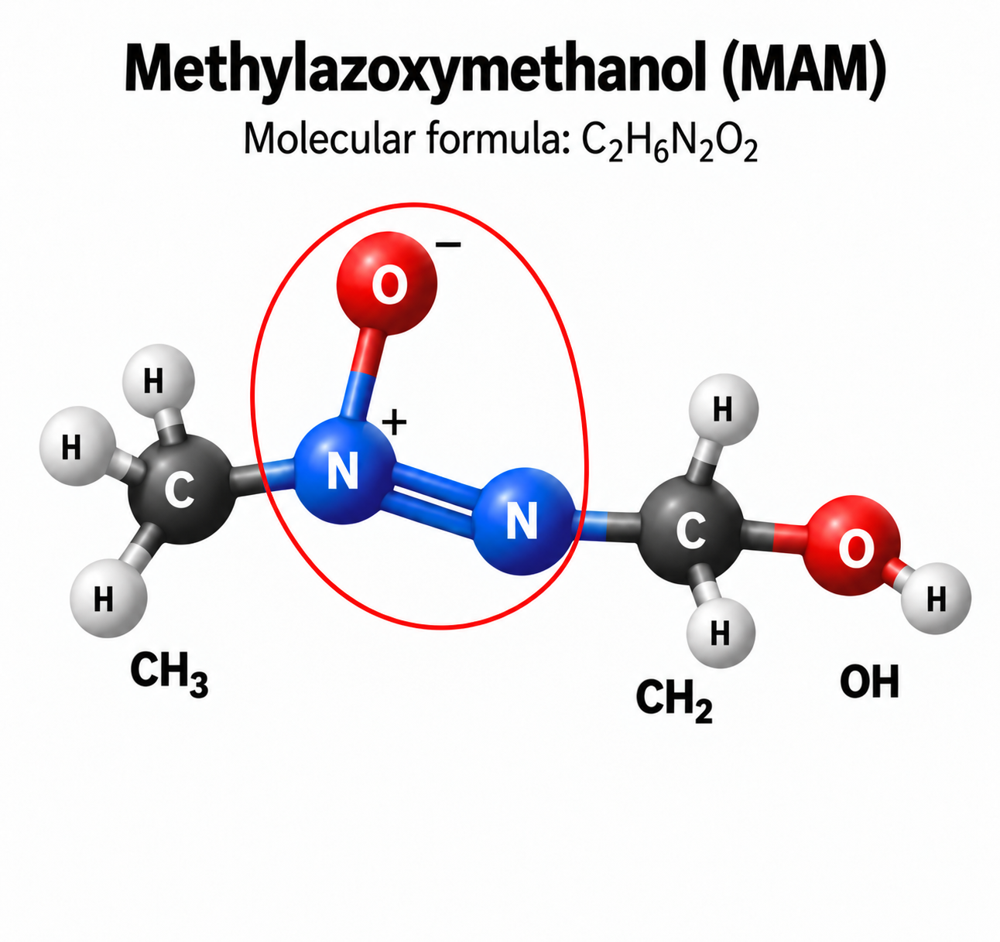
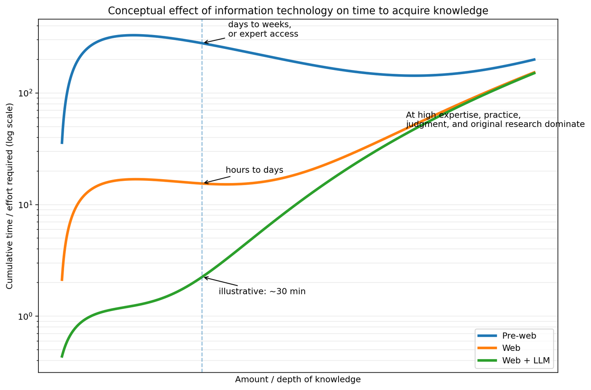

Cycad Deep-Looking Conversation
Date: September 24, 2026
This transcript captures a conversation about viewing a cycad through multiple lenses: poetry, chemistry, toxicology, botany, cultural history, horticulture, and the acquisition of knowledge.

1. Haiku: sword-like cycad fronds
User:
[Image supplied: cycad with radiating fronds and a central cone]
make a haiku emphasizing the sword-like appearance of fronds on this cycad
Assistant:
Green swords fan outward
Ancient blades guard golden cone
Cycad crowns the shade
2. Chemistry of cycad poison
User:
describe the chemistry of the poison on this plant
Assistant:
The poison is not really a coating on the cycad; it is chemically stored inside the plant’s tissues. In cycads such as the sago cycad (Cycas revoluta), the most important toxin is cycasin, along with several related compounds.
Cycasin is a glycoside: a toxic molecule attached to a glucose molecule. That sugar attachment makes the compound relatively stable while it is sitting in the plant. When plant tissue is eaten and cycasin is broken down—by enzymes in the gut or by intestinal microbes—the glucose is removed:
cycasin → glucose + methylazoxymethanol (MAM)
MAM is the dangerous part. It is chemically unstable and can generate highly reactive methylating species. These can transfer a –CH₃ methyl group onto DNA bases, particularly guanine. That chemical modification can interfere with DNA replication and damage cells. The liver is especially vulnerable because it processes absorbed chemicals, which is why cycad poisoning can produce severe liver and gastrointestinal injury.
There is a second interesting cycad toxin: BMAA (β-N-methylamino-L-alanine). Unlike cycasin, BMAA resembles an amino acid. It has been investigated for possible effects on neurons and protein metabolism. Its contribution to acute cycad poisoning is less clear than cycasin's, and proposed links between long-term BMAA exposure and human neurological disease remain scientifically debated.
An especially interesting chemical feature is that the sugar portion of cycasin is effectively a delivery package. The plant stores the molecule in a comparatively less reactive form; after hydrolysis, the much more reactive MAM appears. That's a strategy found widely in plant chemical defenses—store a precursor and release or activate the toxin when the tissue is damaged or eaten.
In the photograph, the large yellow structure is a male cone, so it produces pollen rather than seeds. Cycads contain toxins in leaves, stems, roots and reproductive tissues, but seeds of female plants are particularly hazardous.
So chemically, the cycad's defense can be summarized as:
stored glycoside → enzymatic cleavage → reactive molecule → DNA methylation and cellular damage.
That is a nice chemistry lens for this plant: those sword-like fronds are a visible defense, while cycasin is its molecular defense.
3. Molecular formula and ball-and-stick model of MAM
User:
what is the chemical formula (ball and stick model) for MAM
Assistant:
MAM—methylazoxymethanol—has the molecular formula C₂H₆N₂O₂ and a molar mass of about 90.08 g/mol.
Its connectivity is commonly written as:
CH₃–N(O)=N–CH₂OH
More formally, the azoxy group is represented with charge separation:
CH₃–N⁺(O⁻)=N–CH₂OH
In a conventional ball-and-stick model you would see:
- 2 carbon atoms — usually black or dark gray
- 6 hydrogen atoms — white
- 2 nitrogen atoms — blue
- 2 oxygen atoms — red
The interesting center is the N–N–O azoxy group. One carbon is a methyl group, CH₃–, while the other is a hydroxymethyl group, –CH₂OH:
CH₃ — N⁺(O⁻) = N — CH₂ — OH
So it is actually a surprisingly small molecule compared with the large cycasin molecule stored in the cycad.
User:
yes, do thjis
Assistant:

4. The chemistry lens as a path of investigation
User:
my purpose in asking is that a cycad when viewed from a chemistry lens leads to this discussion
Assistant:
Exactly. The cycad itself becomes the anchor object, and the chemistry lens changes what becomes noticeable and what questions become natural.
You began with something directly visible—the striking plant and its sword-like fronds. But once you deliberately ask, “What would a chemist see here?”, the path quickly moves beneath the visible surface:
cycad → toxicity → cycasin → hydrolysis → MAM → molecular structure → reactive chemistry → DNA methylation → biological effects
That is a good example of why a disciplinary lens is more than simply attaching a fact to an object. The lens generates a chain of investigation. Nothing about the photograph visibly announces C₂H₆N₂O₂, yet chemistry provides a route from the macroscopic plant all the way down to molecular bonds and electron behavior.
And there is a particularly nice contrast here:
The eye sees swords; chemistry sees molecular defenses.
The sword-like fronds are a physical deterrent, while compounds such as cycasin are a chemical deterrent. So even the idea of defense bridges the visible and molecular scales.
For your deep-looking framework, this is an especially strong example because the lens doesn't merely provide a different description of the cycad. It leads you somewhere you probably would not have gone without explicitly choosing chemistry. That's the productive power of the lens: observation → question → investigation → new representation—in this case ending with a ball-and-stick molecule.
5. Does molecular geometry reveal defense?
User:
is there anything about the geometry as shown in the image that indicates its defensive aspect?
Assistant:
Yes—but only indirectly. The geometry by itself does not say “defensive molecule.” What it does reveal are structural features that a chemist recognizes as potentially reactive.
The most important feature in your ball-and-stick model is the central azoxy group:
CH₃–N⁺(O⁻)=N–CH₂OH
The two nitrogens and oxygen form a relatively compact, nearly planar reactive region. Notice especially the N⁺–O⁻ charge separation. That tells us electrons are distributed very unevenly across this part of the molecule. The N=N bond also restricts rotation and creates a chemically distinctive electronic system. Those are much more significant than the molecule's overall external shape.
But the defensive chemistry becomes clearer when we consider what the structure can turn into. MAM can decompose biologically to produce a highly reactive methyldiazonium species, which can transfer a methyl group to nucleophilic sites in DNA; methylation of guanine is one documented consequence.
So there is a useful distinction for your chemistry lens:
geometry → electronic structure → reactivity → biological damage → plant defense
In other words, unlike the cycad's sword-like fronds, where the defensive geometry is visually obvious, MAM's defense isn't encoded in a recognizable “weapon shape.” It is encoded more subtly in bonding and electron distribution.
In fact, for deep looking, this is an interesting lesson: a ball-and-stick model may not be the best representation for seeing toxicity. An electrostatic-potential surface, showing positively and negatively charged regions, followed by a diagram showing MAM → reactive methylating species → DNA, would make the defensive chemistry much more visually apparent.
6. Locating the azoxy group in the model
User:
so this group is the left side of the image?
Assistant:
Yes—mostly the left-center of the image.
The azoxy group is this part:
–N⁺(O⁻)=N–
In the picture, that is the red oxygen above the first blue nitrogen, plus the two blue nitrogens. The far-left CH₃ group is attached to it, but is not itself part of the azoxy group.
So visually:
CH₃– [ N⁺(O⁻)=N ] –CH₂OH
↑
azoxy group
That bracketed region is the chemically distinctive part we were discussing.
User:
can you draw a circle or surrounding curve for this group on that image?
Assistant:

7. “Cycad Hell” in Japan
User:
In japan, there was an island or region and a paper include the word "hell" was included in the title. Do you know this paper?
Assistant:
Yes. I think you may be remembering “From ‘Cycad Hell’ to Sacred Landscapes: Tracing the Cultural Significance of Cycads in the Ryukyu Islands and Japan” by Joshua D. Englehardt and Michael D. Carrasco, published in 2023. It focuses especially on the Ryukyu Islands, including Okinawa, and on Cycas revoluta—the same cycad we have been discussing.
The phrase “cycad hell” is a translation of the Japanese sotetsu jigoku (蘇鉄地獄). It refers to periods of severe poverty and food shortage, especially in Okinawa and parts of the Ryukyus, when people had to rely heavily on cycads as food. Because cycads contain toxins, they had to be carefully processed before their starch could be safely eaten.
That paper is particularly relevant to what we have just been doing because it connects several lenses at once:
cycad → chemistry/toxicity → food processing → famine → social history → cultural meaning
There is also a newer 2025 paper, “Threats to cycad biocultural heritage in the Amami Islands, Japan,” which discusses Amami Ōshima and the Amami Islands and also explicitly uses the phrase sotetsu jigoku, “cycad hell.”
So if you remember “Hell” actually being in the paper's title, the 2023 “From ‘Cycad Hell’ to Sacred Landscapes” paper is almost certainly the one.
And this gives your cycad example another nice deep-looking trajectory: the same plant can take us from its sword-like geometry, down to MAM molecular chemistry, and outward again into the history of famine and foodways in the Ryukyu Islands.
User:
that is the one. Thanks downloaded it from my university access. Were cycads native to Japan? Where did the Florida sago cycads come from because I do not think they originated in Florida
Assistant:
Yes. Cycads are native to Japan, and the species in your photograph, Cycas revoluta—the Japanese sago cycad—is one of them. Kew gives its native range as southern Japan, including southern Shikoku, Kyushu, and the Nansei/Ryukyu Islands, extending into parts of southeastern China and Taiwan. UF/IFAS summarizes it more simply as native to the tropical islands of southern Japan.
So the “cycad hell” history in the Ryukyus was not about an introduced ornamental plant. People there were dealing with a plant that was part of the regional flora and culture. That makes the story much more interesting: a native plant that is poisonous, yet could become a famine food after careful detoxification.
The familiar Florida sago cycads are not native to Florida. Cycas revoluta was brought in as an ornamental and became extremely popular because Florida's subtropical climate suits it well. UF/IFAS explicitly describes it as a southern-Japanese species grown throughout Florida and other warm parts of the United States.
Florida does, however, have a native cycad of its own: the coontie, Zamia integrifolia. It is much lower-growing and less palm-like than the big Cycas revoluta in your photograph.
So there is a nice geographic contrast:
Japan / Ryukyus → native Cycas revoluta → famine food and “cycad hell” history
Florida → introduced Cycas revoluta → ornamental landscape plant
Florida → native Zamia coontie → indigenous and later settler use of its starch
That last connection is especially interesting for your lens approach, because Florida and the Ryukyus independently have cycads + toxicity + human processing of starch. The chemistry becomes part of two very different cultural histories.
8. How Cycas revoluta reached Florida
User:
where did Florida's examples originate from?
Assistant:
If you mean the Florida Cycas revoluta like the one in your photograph, their ultimate source was Japan, brought into Florida through the ornamental nursery trade rather than occurring there naturally.
There is good historical evidence for this. Florida nursery catalogs were already selling Cycas revoluta in the 1890s. An 1893 Royal Palm Nurseries catalog described the “Sago-Palm” or “Japanese Fern Palm” and noted that cycad trunks could survive long sea voyages packed without leaves or soil. By 1910, the same Florida nursery was explicitly offering both small plants and larger “imported plants.”
American nursery catalogs from the same period make the source clearer: they advertised Cycas revoluta specimens and dormant trunks “imported from Japan.” One catalog even describes freshly imported Japanese cycad trunks being sold before they had rooted or produced leaves.
So the broad historical path seems to have been:
southern Japan → international horticultural trade → Florida nurseries → Florida landscapes
Once established in Florida nurseries, the plants were also propagated locally from seed and offsets, so a sago cycad growing in a Florida yard today is quite possibly several nursery generations removed from the original Japanese imports. A Florida nursery catalog from 1926–27, for example, lists the species as “Japan” but offers locally produced seedlings as well as larger plants.
What I have not found is evidence that lets us say most Florida plants specifically came from Okinawa, Amami Ōshima, Kyushu, or another particular Japanese population. The natural range includes Kyushu, the Ryukyu/Nansei islands, southern Shikoku, and nearby parts of East Asia.
That raises an intriguing connection with the “cycad hell” paper: the ornamental cycad in a Florida landscape may ultimately descend from the same broad southern-Japanese cycad populations that had such a very different cultural role in the Ryukyus.
9. Knowledge, expertise, and percentiles
User:
a question on knowlege: I guess that through this interaction and my web searching that I probably know more than 99% of the people on Amelia Island. However, to get to 99.9% I might need a graduate degree or extensive experience as a horticulturalist. The statement if guesswork and makes me wonder about acquiring knowledge more generally about a topic.
Assistant:
Yes—your intuition points to something important, but the percentile numbers are probably less useful than the shape of the learning curve.
After one good observation, some targeted searching, and a sustained conversation, you can move surprisingly quickly from “I recognize a sago palm” to knowing that it is actually a cycad, that Cycas revoluta is native to southern Japan, that Florida plants were introduced ornamentals, that cycasin produces MAM, that the Ryukyus have the history of sotetsu jigoku, and that Florida has its own native cycad, coontie. Relative to the general public, that is already quite specialized knowledge.
But the jump from “unusually knowledgeable amateur” to “expert” is not just more facts. Several different kinds of knowledge begin to accumulate:
- Vocabulary and facts — species names, toxins, geography, history.
- Conceptual structure — knowing how the facts connect: plant defense, metabolism, biogeography, cultural adaptation.
- Discrimination — being able to distinguish similar species, recognize abnormal growth, identify cones, pests, nutrient deficiencies, etc.
- Procedural knowledge — knowing how to propagate, transplant, diagnose, sample, assay, or manage the plant.
- Tacit knowledge — the “I have seen 500 of these” knowledge of a horticulturalist or field botanist. This is difficult to acquire from books alone.
- Research knowledge — knowing where the uncertainties, disputes, and unanswered questions are.
That is why your imagined move from 99% to 99.9% feels so much harder. Early learning is extremely efficient. A few hours can put you far ahead of someone who has never investigated the subject. But every additional increment requires progressively more specialized experience.
You might picture it as a curve:
ordinary familiarity → informed amateur → serious amateur → practitioner → specialist → research expert
The distances between those stages are not equal. Going from ordinary familiarity to informed amateur might take an afternoon. Going from informed amateur to serious amateur might take months. Going from there to genuine professional expertise might require years.
There is another important point: expertise is multidimensional. A horticulturalist might know far more than you about cultivation and disease. A plant chemist might know vastly more about cycasin metabolism but be unable to identify several cycads in the field. An ethnobotanist might know the Ryukyuan food-processing history in great depth. A paleobotanist might know the fossil record. There isn't really a single cycad-knowledge ranking.
This fits your lens idea particularly well. You are building something more like a knowledge network than climbing a single ladder. Starting with one cycad, you have already opened paths into:
botany ↔ chemistry ↔ toxicology ↔ Japanese geography ↔ famine history ↔ ethnobotany ↔ Florida horticulture
A specialist often goes very deep along one or two of those branches. Your deep-looking approach does something somewhat different: it deliberately creates connections across branches.
And that suggests a useful definition of acquiring knowledge:
Knowing more is partly accumulating information, but knowing a subject increasingly means having a richer structure into which new information can be placed.
At first, “MAM” is an isolated fact. Now when you encounter it, you can locate it in a chain:
cycad → cycasin → MAM → reactive chemistry → toxicity → detoxification → human food practices → Ryukyuan history.
That structure is probably a better measure of learning than whether you are in the 99th or 99.9th percentile.
One of the fascinating consequences of LLMs and web search is that the first part of that curve has become dramatically easier. What once might have required several days in a library can now happen during a walk followed by an hour of investigation. The difficult part increasingly becomes not obtaining facts, but organizing them, testing them, connecting them, and knowing when your understanding has reached its limits.
10. A curve for time required to acquire knowledge
User:
great explanation. I am envisioning a sort of steep exponential curve with an x-axis of amount of knowlege and y-axis on time to acquire. As you say this curve was probably much more flat (even y=x) before the internet and web
Assistant:
Yes—though I would modify the picture in one important way.
With knowledge/depth on the x-axis and cumulative time required on the y-axis, I would expect something like a convex or hockey-stick curve, rather than a simple exponential over the whole range:
recognize → understand → connect → practice → discriminate → contribute new knowledge
The remarkable thing about the web, and now LLMs, is that they have pushed the left and middle portions of that curve dramatically downward.
For example, with our cycad:
- Recognize Cycas revoluta: minutes.
- Learn native range, Florida introduction, cycasin, MAM: perhaps an hour.
- Discover sotetsu jigoku and connect it with Japanese history: another hour or two.
- Read several papers and begin understanding competing interpretations: days.
- Reliably identify many cycad species, diseases, reproductive stages, etc.: months or years.
- Understand cycad chemistry at a professional level: years.
- Know enough to recognize what the literature itself doesn't yet know: probably graduate-level research experience.
So I wouldn't quite say the pre-web curve was y = x. It was probably the same basic convex curve, but shifted substantially upward and to the left. Even elementary knowledge once had considerable friction: finding a library, locating the right book, using an index, tracking references, obtaining an obscure journal paper, finding someone who knew the subject.
The change might be pictured conceptually like this:

The really interesting part is that the curves begin to converge at the far right.
An LLM can tell you in seconds what cycasin is. It cannot give you twenty years of having grown cycads, dissected cones, recognized diseased specimens, performed chemical assays, argued with other researchers, and discovered that some apparently straightforward claim in the literature is actually uncertain.
So technology disproportionately reduces the cost of what we might call accessible explicit knowledge. It reduces the cost of expert knowledge much less because expertise increasingly consists of things such as experience, judgment, verification, tacit discrimination, experimentation, and creation of new knowledge.
That suggests a rather striking consequence:
The distance from knowing nothing to knowing quite a lot has collapsed. The distance from knowing quite a lot to becoming an expert has collapsed much less.
And LLMs may have changed the curve even more than the web did. Search made finding answers inexpensive. Conversation makes following chains of questions inexpensive.
Your cycad excursion is a good example. You didn't have to formulate ten perfect Google searches in advance. You could simply notice something, ask about it, encounter MAM, inspect its molecular geometry, remember a paper containing “hell,” follow that into Ryukyuan history, and then ask about the epistemology of what just happened.
That means the technology isn't merely lowering retrieval time. It is lowering the cost of intellectual wandering.
And I suspect that is particularly important for deep looking: the expensive step used to be following every interesting branch. Now following a branch is so cheap that one ordinary plant can become an entry point into chemistry, botany, toxicology, Japanese history, horticulture, and ultimately the philosophy of knowledge itself.
Summary thread
A single cycad observation led through a sequence of disciplinary and conceptual lenses:
visual form → poetry → botany → plant defense → cycasin → MAM → molecular geometry → toxicology → Japanese history → Florida horticulture → ethnobotany → expertise → philosophy of knowledge
A central idea that emerged was:
The eye sees swords; chemistry sees molecular defenses.
And a broader idea about learning:
The distance from knowing nothing to knowing quite a lot has collapsed. The distance from knowing quite a lot to becoming an expert has collapsed much less.